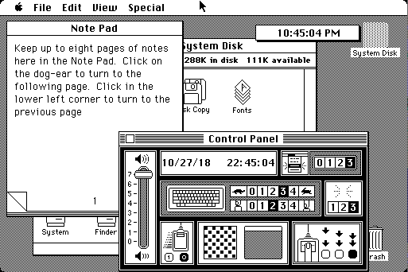
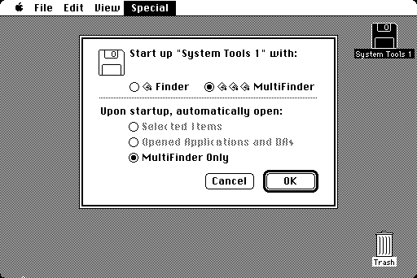
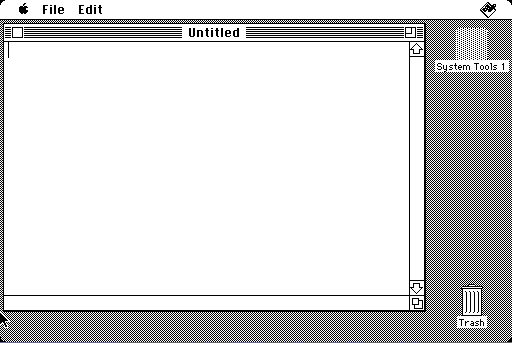

| 主页 | 入门 | 硬件指南 | 软件指南 | Mac帮助 | 关于本站 |
从最早在1984年1月份发布的Macintosh 128K随机附带的System 1版本算起，到2001年12月份的Mac OS 9.2.2， Classic历经了17个年头，发布了9个大版本。当然最后的悲惨下场是在2002年WWDC被Jobs亲手送进棺材。
一开始的System 1-6是作为免费更新发布的，而从System 7开始， Classic Mac OS变成了付费更新的模式。先来看看这几个Classic之最：
早期的System 1-5版本极为混乱，Macintosh System Software版本、Finder版本和System版本几乎完全不同步。
| 系统软件 套件版本（SSW） |
System文件版本 | Finder 版本 |
LaserWriter 版本 |
发行 日期 |
发行说明 |
| Macintosh System Software |
1.0 (.97) | 1 | 1984-1-24 | 首个发行版本 | |
| Macintosh System Software (0.1) |
1.1 | 1.1g | 1984-5-5 | 维护版本。增加了关于Finder界面，以及Clean Up菜单命令 | |
| Macintosh System Software (0.3 & 0.5) |
2 | 4.1 | 1985-4 | Finder更新：增加多文件夹支持，“Shut Down”菜单命令，新增MultiFinder扩展以实现简单多任务。
系统更新：增加Command+Shift+3的截图快捷键。 |
|
| Macintosh System Software (0.7) |
3 | 5.1 | 1.1 | 1986-1 | 随Macintosh Plus发行 |
| System Software 1.0 |
3.1 | 5.2 | 1.1 | 1986-2 | |
| System Software 1.1 |
3.2 | 5.3 | 3.1 | 1986-6 | 修正了数据丢失和系统崩溃的问题，更新“选配器”和计算器。 |
| AppleShare 1.0 | 3.3 | 5.4 | 1987-1 | AppleShare 1.0 Work Station安装盘（Macintosh 512K） | |
| AppleShare 1.1 | 3.3 | 5.5 | 1987 | AppleShare 1.1 Work Station安装盘（Macintosh 512K） | |
| AppleShare 2.0 | 3.4 | 6.1 | 1988 | AppleShare 2.0 Work Station安装盘（Macintosh 512Ke） | |
| System Software 2.0 |
4 | 5.4 | 3.3 | 1987-1 | 为Macintosh SE发行，已包括AppleShare |
| System Software 2.0.1 |
4.1 | 5.5 | 4 | 1987-3-2 | 为Macintosh II发行，更新LaserWriter驱动 |
| System Software 5.0 |
4.2 | 6.0 | 5.0 | 1987-10 | 开始自带MultiFinder 1.0多任务组件 |
| System Software 5.1 |
4.3 | 6.0 | 5.1 | 1987-11 | 更新LaserWriter驱动，更新Apple HD SC Setup程序 |
例如1984年1月份随Macintosh 128K发布的Macintosh System Software，其中Macintosh System Software无版本号， System版本是1.0（显示为0.97），Finder版本为1.0；但它第一个更新， Macintosh System Software 0.1版， System版本更新到1.1，Finder版本是1.1g；而Macintosh System Software 0.3和0.5版，其中System的版本为2.0，Finder版本跳到了4.1。随后的Macintosh System Software 0.7，其中的System版本为3.0，Finder版本5.0。 可见版本号之混乱。
到了System Software 5，其System文件版本也升级到了4.0版本，Finder则用上了6.0版本。System Software 5可能是第一个有中文语言的版本， 繁体的系统套件版本号是TA-1.2版。
本文讨论的System 1-5的版本指的是System文件的，而System 5指的是System Software 5套件的版本（其System文本版本是4.2和4.3）。
可以看出，System 1的桌面布局对比今天的macOS甚至感觉还有几分相似， 例如全局菜单栏，桌面图标从右开始等等。
System 1-4版本的界面几乎是一样的，除了自带的应用程序和工具不同以外。从System 3开始有HFS文件系统支持，System 4开始支持颜色（Macintosh II上不再是黑白了）。此时的Mac不借助一些工具（如Switcher、Multi-Mac等），System 1-4都是不能同时进行多任务的。能和应用程序同时打开的，只有苹果菜单中的桌面附件，如控制板、计算器等等。
而System 5，即System Software 5套件，变化算是比较大的。最显著的变化是自带了MultiFinder扩展，可以实现协同式多任务。除此之外，System Software 5的工具软盘里还带了Disk First Aid等实用工具。System Software 5开始，苹果似乎也有意统一版本号，虽然其System文件的版本还是4.2和4.3版，但至少System Software套件版本不像之前那样放飞自我了，一下0.3一下0.7，一下又回到无版本的阶段，还有不知所谓的2.0和2.0.1之后便没有3.0套件版本。
虽然实现了多任务，不过这还是非常原始，相对来说也不稳定。启用MultiFinder后，菜单栏最右侧会显示当前运行的应用程序的图标，点击这个图标就能切换应用程序，也可以在苹果菜单中切换。
如果没有启用MultiFinder，启动应用程序时Finder会自动退出并释放内存。待应用程序退出后系统重新打开Finder。
从《Macin 中文系统 7.1.2S 使用手册》的前言可得知，苹果推出第一代的中文系统是在1987年，其版本为中文系统1.0。而目前在网上能找到的最老中文系统版本是TA-1.2，也就System Software 5.1的繁体中文版。更早版本的中文系统1.0是基于System Software 5.0（1987年10月）还是System 3.3/4.0（1987年1月和3月），以及是否有简体中文版，目前就不得而知了，还有待更多资料的出现。
System 6是早期System Software的集大成者，继承了AppleShare、LaserWriter、MultiFinder等多种组件，不过总体来说其界面与之前版本差别不大。从System 6开始，System文件版本和System Software套件版本终于统一了。当然，System 6是一个比较长寿的系统，从1988年发布的6.0.0到1991年的6.0.8，并且即便到了1995年，还有相当一部分程序支持System 6。它也是System 7发布之前，最后保留这种早期原始设计的系统了。
System 7可以说自1984年以来最大的一次升级。如果你的Mac有2M或更多的内存，那还是很值得升级的。
System 7代号“Big Bang”（大爆炸）（实际很可能是“Big Boom”），增加了诸如虚拟内存、个人文件共享还有QuickTime之类的新功能。System 7对操作逻辑的改变也是承上启下的。System 7开始（到Mac OS 9.2.2），苹果菜单中的项目也能自己编辑（相当于是显示“系统文件夹”中“苹果菜单项目”文件夹中的内容）。系统文件夹也不再杂乱无章，而是将各类资源放进各自的文件夹中进行分类。系统文件夹中的“System”项目变成了一个手提箱（System Suitcase），可以放置一些提示音文件、字体和键盘布局等，这些文件其实依然保存在System的Resource fork中，只是能在Finder中查看和管理这些项目；“功能扩展”文件夹里可放置一些驱动、库和（功能上的）扩展程序等；而设置程序也被放进了“控制板”文件夹并可以直接打开，不像System 6是直接放在系统手提箱里，需要在“控制板”桌面附件程序中调用。字体文件一般放在“字体”文件夹内，这是System 7.1的设定，System 7.0的字体是直接放在系统文件夹或系统手提箱（System Suitcase）内的。
System 7主要7.0、7.1、7.5和7.6这几个版本。7.0和7.1的差别不大，System 7.1是首个不免费分发的版本。System 7还见证了从摩托罗拉68000系列处理器迁移到PowerPC的过程，7.1.2就是第一个支持PowerPC的版本。7.5版本引入了更多的功能扩展和组件（包括第三方提供的），一些新的功能如下：
System 7.5启动时有进度条显示，Apple Guide互动帮助，菜单栏时钟显示，WindowShade（收合窗口），MacTCP（后来被OpenTransport取代），PowerTalk、Launcher（应用程序启动器窗口），苹果菜单子菜单支持，QuickDraw GX（一个2D图形渲染引擎）以及OpenDoc支持等；System 7.5还增加了系统级别的拖放支持（文本和其他一些对象的），例如选中文本后拖放到桌面上会建立一个文字剪辑。此外，从System 7.5.1开始，启动界面也不再是“Welcome to Macintosh”的提示了，取而代之的是“Mac OS”及其logo画面，这应该是为后来苹果授权其他公司生产Mac兼容机做准备。
而System 7.6吸取了Copland项目（胎死腹中的下一代Mac OS）一些成果，自带更多的功能扩展和工具，（一定程度上）提高了Finder的稳定性及改进了系统的内存管理。
从System 7开始，系统的很多功能都是通过功能扩展（Extensions）和控制板来实现的，小到苹果菜单的子菜单支持，菜单栏上的时钟显示（通过“日期和时间”控制板），语言和输入法支持等；大到光驱和文件系统支持，QuickTime，QuickDraw，AppleScript等。连系统本身都自带了一些来自第三方的功能扩展和控制板。后续的Mac OS 8和9也在继续添加功能扩展，只是会将一些基础的库和扩展合并到System文件中。
当时Mac第三方软件也提供控制板和功能扩展，由于软件数量众多，相互的兼容性无法保证。系统没有内存保护（系统和应用程序都运行在同一内存空间或者说是内核级别），加上多任务是协同式的（意味着如果一个程序出错或崩溃会导致整个系统卡死），当时系统崩溃的情况时有发生。因此如果安装的应用程序太多太杂，系统稳定性可能就会跟开玩笑一样。诸如Conflict Catcher之类的崩溃诊断程序也应运而生。

Apple logo、Macintosh、Mac、Mac OS是Apple Inc.的商标。本站是非官方支持站点，与Apple Inc.无任何关系。
感谢@Mation Wang制作Logo